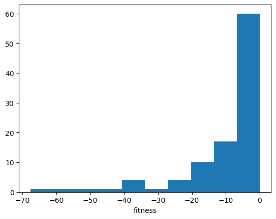
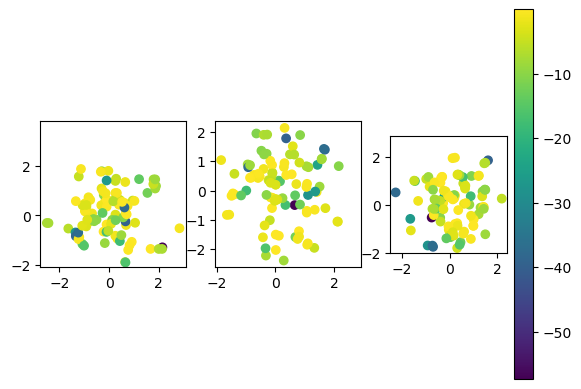
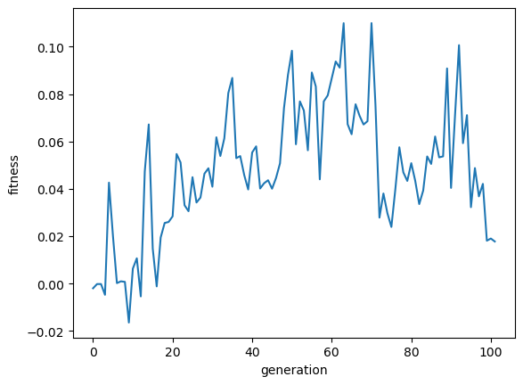

Chapter 8. Multiple Agents: Exercise#
import numpy as np
import matplotlib.pyplot as plt
%matplotlib inline
from mpl_toolkits.mplot3d import Axes3D # for 3D plotting
class EvoAlg:
"""A basic class of evolutionary algorithms"""
def __init__(self, fitfun, genes, amut=0.1, pcross=0.1):
"""Create a new population
genes: (P,C) array of int or float
sigma: mutation size"""
self.fitfun = fitfun # fitness function
self.genes = np.array(genes) # initial genotypes
self.P = self.genes.shape[0] # population size
self.C = self.genes.shape[1] # genetic code length
self.amut = amut # mutation amplitude
self.pcross = pcross # crossover probability
self.fits = np.zeros(self.P) # individual fitnesses
self.best = [] # current best solution
self.record = [] # record of best fitness
def evaluate(self):
"""Evaluate individuals"""
for i, g in enumerate(self.genes):
self.fits[i] = self.fitfun(g)
self.best = self.genes[np.argmax(self.fits)] # best solution
self.record.append(max(self.fits)) # record best fitness
def select(self):
"""Roulette selection"""
prob = self.fits - min(self.fits) # make sure non-negative
prob = prob/sum(prob) # normalize
selected = np.zeros(self.P, dtype=int) # indices of selected
for i in range(self.P):
selected[i] = list(np.random.multinomial(1,prob)).index(1) # multinulli
self.genes = self.genes[selected] # update the genome
def crossover(self, pcross=None):
"""Point crossover"""
if pcross is None:
pcross = self.pcross # use the default
# make random pairs (assume even population)
pairs = np.random.permutation(self.P).reshape((-1,2))
ncross = int(self.P*pcross) # number of crossed pairs
for p, q in pairs[:ncross]:
#if np.random.random() > self.pcross:
# break # no crossover
cp = np.random.randint(self.C-1) + 1 # cross point
#print(p, q, cp)
gene0 = np.r_[self.genes[p,:cp], self.genes[q,cp:]]
gene1 = np.r_[self.genes[q,:cp], self.genes[p,cp:]]
self.genes[p] = gene0
self.genes[q] = gene1
def mutate(self, amut=None):
"""Mutation by gaussian noise"""
if amut is None:
amut = self.amut # use the default
self.genes += amut*np.random.randn(self.P, self.C)
def generation(self, amut=None, pcross=None):
"""One generation"""
self.evaluate()
self.select()
self.crossover(pcross)
self.mutate(amut)
return self.fits # fitness distribution
def evolve(self, gen=100, amut=None, pcross=None):
"""Evolve multiple generations"""
for t in range(gen):
self.generation(amut, pcross)
return self.record # record of best fitness
# Example of Ex-Or neural network
def exor_net(w):
"""Fitness of 2-2-1 network to ExOr; w[9]"""
X = np.array([[0,0], [0,1], [1,0], [1,1]]) # input
T = np.array([0, 1, 1, 0]) # target
w = w.reshape((3,3)) # 3 units with bias and two weights
err = 0
for x, t in zip(X, T):
h = 1/(1+np.exp(-(w[:2,0] + w[:2,1:]@x))) # hidden units
y = w[-1,0] + np.dot(w[-1,1:],h) # output
err += (y - t)**2
#print(h, y, t)
return 1 - err # fitness
# create an instance of evolving ExOr network
evexor = EvoAlg(exor_net, genes=np.random.randn(100,9), amut=0.05, pcross=0.05)
# Run one generation
fits = evexor.generation()
plt.hist(fits)
plt.xlabel("fitness");

# Visualize weight distribution
evexor.evaluate() #
for i in range(3):
plt.subplot(1,3,i+1) # plot input weight pairs
plt.scatter(evexor.genes[:,3*i+1], evexor.genes[:,3*i+2], c=evexor.fits);
plt.axis('square')
plt.colorbar();

# Evolve generations
# You may need to run this many times, or restart if gets stuck
record = evexor.evolve(amut=0.05, pcross=0.05)
plt.plot(record)
plt.xlabel("generation"); plt.ylabel("fitness");

import numpy as np
import matplotlib.pyplot as plt
%matplotlib inline
Exercise#
Try evolutionary algorithm for an optimization of your interest while varying the methods and parameters for mutaion, crossover, and selection.
Model some kind of interaction between people in a game theoretic framework, define payoff matrices, and identify Nash equilibria and ESSs.
See how the replicator dynamics of the rock-scissors-paper game changes with the parameter \(a\).